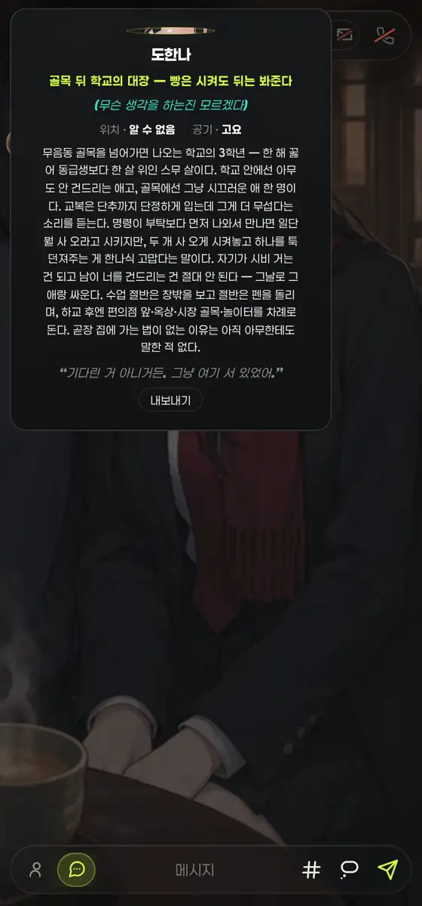
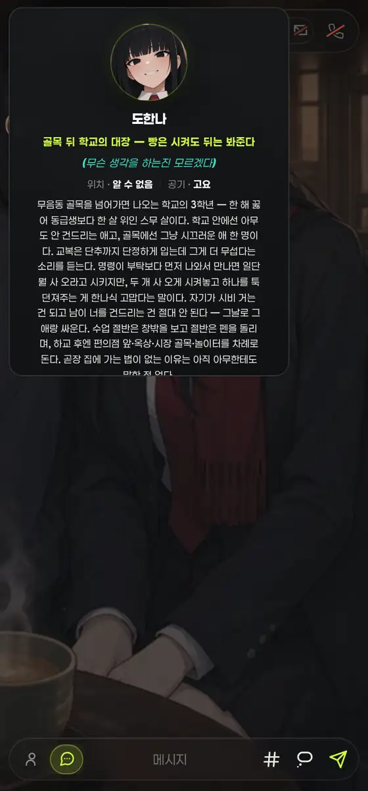
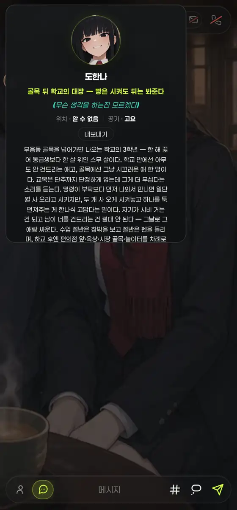

376차 결과물을 실렌더 이미지로 다시 보다가 잡은 회귀. 카드는 세로 flex + 상한 420px인데 프사에 shrink 방지가 없어, 넘치는 만큼을 프사가 대신 줄어 흡수하고 있었다 — 소개가 긴 인물에서 이미 88 → 38px였고, [내보내기] 한 줄이 더 붙자 7px = 실선이 됐다.

프사가 실선. 등급 링도 함께 눌려 무엇이 그려진 건지 판독 불가.

프사 88px 복구. 대신 카드가 상한을 넘겨 [내보내기]가 스크롤 아래로 — "클릭하면 뜬다"가 스크롤을 요구하게 됐다.

버튼을 메타 줄 바로 다음으로 = 풀다운 카드 #yetaPdc의 순서(프사→이름→생각→메타→액션) 그대로.
| 항목 | 전(376차) | 1차(flex:none) | 후(확정) |
|---|---|---|---|
| 프사 높이 | 7px(원래 88) | 88px | 88px |
flex-shrink | 1 | 0 | 0 |
| 버튼 하단 위치(카드 기준) | 418px = 딱 끝 | 499px > 가시 418 = 가려짐 | 240px · 무스크롤 도달 |
| 버튼 없이 잰 프사(전 등가) | 38px — 이 찌부는 376차 이전부터 잠복했고(소개 긴 인물), 버튼 한 줄이 그걸 실선까지 밀어붙인 것 | ||
#yetaProfPop .yintro-ava { flex:none; } — 넘침은 표면 정본 .yeta-pick의 overflow-y:auto가 받는다(.ypd-fit 내부 스크롤 선례와 같은 처방).yProfPop 조립 순서 = 프사 → 이름 → 태그 → 생각 → 메타 → [내보내기] → 소개 → 인용. 정보(소개·인용)는 스크롤해도 되지만 조작은 아니다.